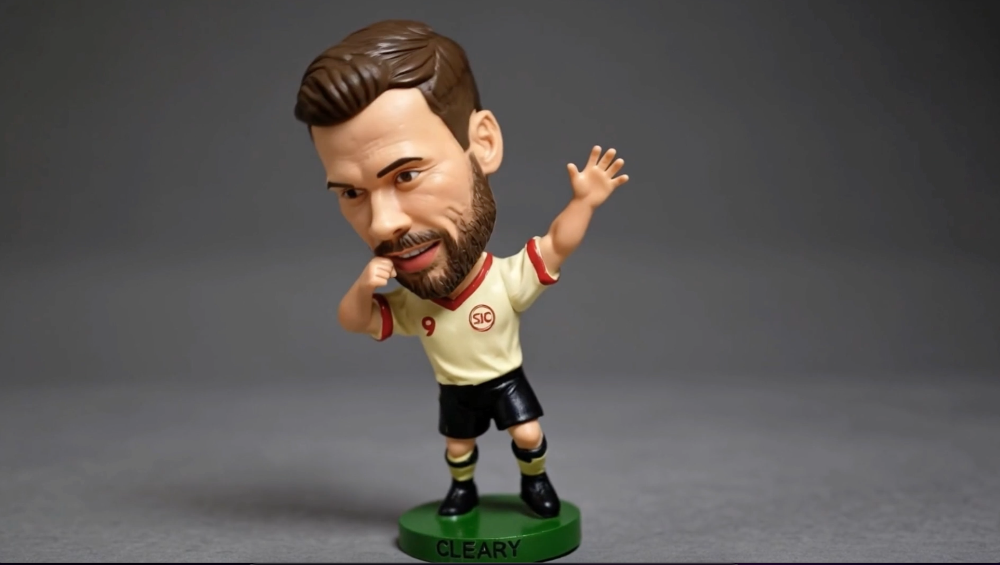
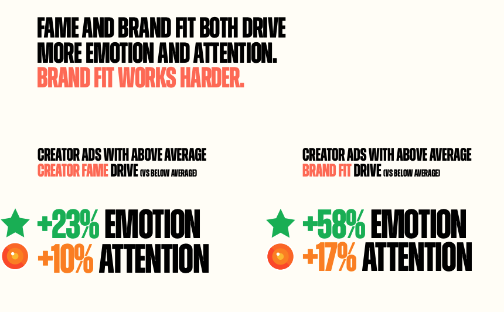
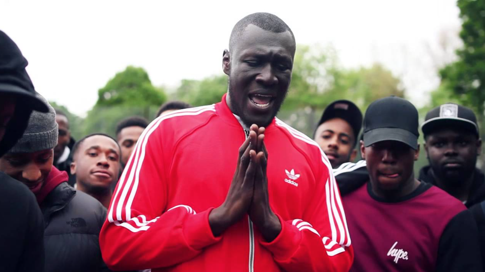

stephenjcleary

I hit Post and watched it go viral in real-time.
As the 2026 football transfer window closes, I was reminded it has been 10 years since the transfer announcement of Paul Pogba to Manchester United. There was a super team of people working on that in the shadows and I was fortunate to play a role in the social publishing.
It was extremely memorable, surely one of the best transfer announcements of all time.
When System1, WPP Media and TikTok released their Creator Effectiveness Playbook a couple of months ago it showed the need to transition away from working with Creators and Talent purely based on Follower count, moving more to a balance between Creator Fame and Brand Fit. Is the creator recognisable to the brand's audience? Does the brand credibly fit in the creator's world?
Going back to the Pogba x Stormzy piece. It was the summer transfer window of 2016. The brief was, how can adidas capitalise on the news of a world-record transfer signing by one of the biggest adidas clubs (MUFC) for an adidas athlete (Pogba)? Looking back I still think it must be one of the best examples in sport of combining Creative Quality with Creator Fame and Brand Fit.

Creator Effectiveness Playbook — System1, WPP Media & TikTok
Connecting Stormzy to the announcement showed you don't necessarily need Talent with the biggest following. Sure, there are other famous MUFC fans out there with greater social followings and celebrity status. But Stormzy was an ideal fit for that moment. It was his breakout year. While still mainly supported in the UK, he was growing his global reach after completing his first European and US tours and the summer festival circuit. He was a massive MUFC fan and already an adidas ambassador. His breakout track Shut Up featured Stormzy wearing a bright red adidas jacket.

He was the perfect fit for the brand to be present in. His fans were already familiar with the adidas and MUFC connection and an excited football audience were looking to get excited with this big announcement. That need state could be dramatised with a musical performance featuring the two talents connected by the three stripes.
Ten years on and the 2026 summer transfer window is slamming shut as I write this. As we open our doors to creators more frequently, are we really questioning their brand fit? Are we sure what we are measuring success by? Is it still by vanity metrics or are we thinking attention, memory and effectiveness?
These couple of young kings reminded me it's probably a better bet to go for the latter.